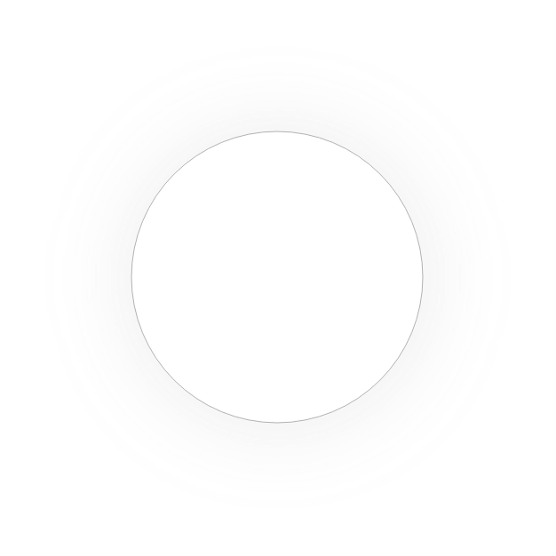

Højskoleophold
Leave / breadcrumbs / here
Efterårsforhold
Start januar
Forårsophold
Start august
Efterårsophold (1. periode)
Opholdet strækker sig over 2 perioder. For hver periode kan du vælge nye valg.
Vælg ét fag fra hver kategori.
Efterårsophold (2. periode)
Opholdet strækker sig over 2 perioder. For hver periode kan du vælge nye valg.
Vælg ét fag fra hver kategori.